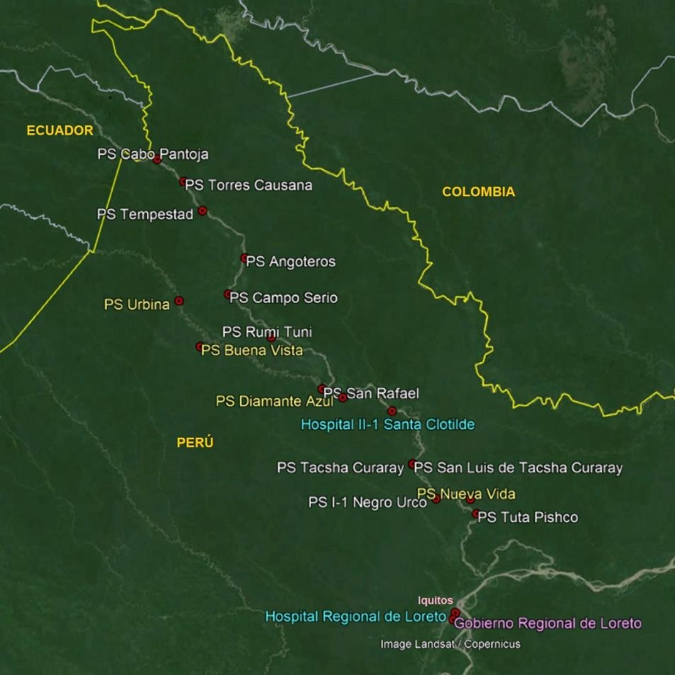

Justificación - Problemas
- Como se ha señalado, en la precuela, esta iniciativa nace de un grupo de estudiantes
del curso INF245, donde se desarrolló una versión simplificada, pero con asistencia
funcional de funcionarios del Hospital Santa Clotilde (HSC) de Napo - Loreto.
-
El HSC es un hospital en la categoría II-1, según el MINSA, que implica que debe
cumplir con ciertas características de prestación de salud. Sin embargo, no brinda
varias de esas prestaciones pues no tienen personal de salud suficiente para ello y
tampoco cuenta con toda la infraestructura requerida. El HSC es parte de la Micro
Red de Salud Santa Clotilde que incluye a 15 establecimientos de salud del primer
nivel de atención (ver imagen 1) y un buque de la Marina de Guerra del Perú
denominado Plataforma Itinerante de Acción Social (PIAS - Río Napo) que brinda
atención en salud en los distritos de Napo y Torres Causana de la provincia de
Maynas (ver imagen 2); que en conjunto tiene como área de influencia la cuenca del
Río Napo con una población de aproximadamente 30 mil habitantes distribuidas en
112 comunidades nativas amazónicas a lo largo de más de 500 kilómetros de
recorrido del río Napo y sus afluentes.

Imagen 1.- Ubicación geográfica del Hospital II-1 Santa Clotilde y de la Micro Red de
Salud Santa Clotilde - Fuente del mapa: Google Earth Pro
-
Por su ubicación geográfica, en la Selva fronteriza, y el descuido de sus autoridades
a lo largo de los años, la hacen: una zona de difícil acceso (principalmente fluvial) y
una zona con nivel variado de desarrollo de las telecomunicaciones por lo que
algunos servicios no están desplegados y los existentes presenten deficiencias e
interrupciones significativas en el servicio.
-
En el eje de la gestión de los datos y generación de información de la prestación de
Salud, se tiene que el manejo de los datos de los pacientes, las consultas e
intervenciones, las hospitalizaciones, el laboratorio y farmacia, entre otros, se hacen
de manera hibrida: algunas parcialmente informatizadas (mediante sistemas ad-hoc
o herramientas de ofimática) y otras en formatos impresos. Esta situación provoca:
(i) que los procesos relevantes sean engorrosos, con duplicidad de registro que
demanda mucho tiempo en su registro, consolidación y utilización; (ii) que los
informes sean poco fiables, pues en la consolidación de los datos se tiene el alto
riesgo de omisión de registros manuales (en formatos pre impresos o sin formatos)
y peor aún la confusión o extravío de registros; y, (iii) que la historia clínica de los
pacientes sea poco útil (incluso no fiable) pues queda incompleta (de manera
temporal o definitiva) o queda afectada por la inclusión de uno o más registros que
le pertenecen a otro paciente (corregidas o no posteriormente). Todos estos hechos
provocan, a su vez, que el personal de salud deba tomar -mucho- más tiempo, de lo
esperado (hasta un 80% de su jornada laboral según autopercepción en el llenado
de formatos), en organizar y utilizar los registros pues están desordenados (en el
mejor de los casos), en lugar de dedicar ese tiempo a la atención de los pacientes.
Asimismo, los reportes o informes médicos consolidados (indicadores) que se
reportan a otras instancias, como el MINSA, GOREL, etc., se ven afectados en tiempo
y fiabilidad. Esta situación recurrente también afecta, de manera emocional, al
personal de salud que hace denodados esfuerzos por salir adelante.
Imagen 2.- PIAS Río Napo - Programa Nacional PAÍS - MIDIS - Fuente de foto: Programa
Nacional PAÍS
-
En el dominio de la solución, existen varias aristas que hacen que el problema sea
muy complejo. Algunos de aristas que existen (sin pretender que sea una lista completa) son: (i)
existencia de soluciones globales (internacionales, nacionales,
pagado o libre) como sistemas de información hospitalaria (SIH) o focalizadas como
sistemas de información de laboratorios; (ii) estándares internacionales
ampliamente aceptados como HL7, o SNOMED CT, CIE10 o DICOM 3, entre otros;
(iii) regulaciones nacionales sobre salud, basadas muchas veces en referentes
internacionales como OMS u OPS en salud y gestión hospitalaria; (iv) marco
normativo nacional como por ejemplo protección de datos o seguridad informática
que deben ser consideradas; (v) la infraestructura existente y su evolución futura;
(vi) el ámbito de influencia y las condiciones geográficas; (vii) las partes interesadas
(personal de salud, MINSA, GOREL, pacientes, familiares de pacientes, ONG,
sociedad, etc.) y sus necesidades; considerando los aspectos culturales de la
comunidades originarias. Además, de manera particular para el caso de HSC, la
visión técnica informática (interna y externa) de cómo hacer viable una solución que
contribuya a resolver el problema descrito.
Justificación - Retos
- Desde la perspectiva académica, existen varios retos al momento de desarrollar una
solución informática para dicho contexto:
-
El primer reto es descomponer el proyecto en fases, de modo que el alcance
funcional y no funcional que se establezca en cada fase sea adecuado y lograble en
su totalidad. Cada fase debe considerar la necesidad priorizada por los usuarios, la
cantidad de estudiantes comprometidos para dicha fase y las múltiples restricciones
ya establecidas o emergentes. Asimismo, cada fase concluye con el software
operando, incluido el periodo de estabilización del software en HSC.
-
El segundo reto es desarrollar un software que transforme, de manera lo más
fidedigna posible, las necesidades de las partes interesadas en un software
operando en el HSC. El software operando debe ser funcionalmente correcto y
completo respecto del alcance establecido. Finalmente, el personal de salud debe
comprobar que el software sí le ayuda en sus actividades cotidianas y los pacientes
perciben que el HSC brinda un mejor servicio.
-
El tercer reto es seguir un proceso de desarrollo de software flexible, iterativo e
incremental adecuado, que permita reaccionar frente a situaciones excepcionales.
El equipo de desarrollo (los tesistas) deben apoyarse en buenas prácticas
pertinentes (p.e. ISO/IEC 29110) de modo que la calidad y cumplimiento del alcance
sean logrados. Asimismo, es necesario mantener un nivel de compromiso y
dedicación, identificando y atendiendo los factores y riesgos que puedan afectar.
-
El cuarto reto es evidenciar el impacto positivo de la solución en el HSC para
distintas partes interesadas a través de indicadores adecuados.
-
El quinto reto es recopilar los problemas y sus resoluciones en el proceso de
desarrollo, analizándolas con respecto de las prácticas recogidas en estándares
internacionales como la ISO/IEC 29110-5-1-2.
-
El sexto reto es elaborar diversos activos de conocimiento (documentación técnica
del software, programas, tesis, artículos, reportes técnicos, etc.) para ser usado para
el desarrollo del software y la divulgación y difusión científica y tecnológica.